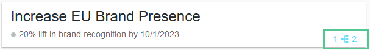
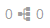
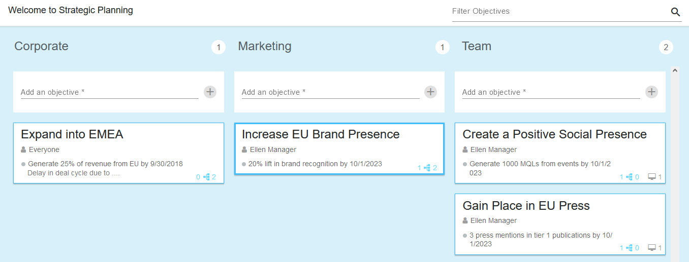

Relationships
Relationships map how objectives cascade from Company to Marketing to Team tier. Note that relationships can be made between Corporate and Marketing objectives, and Marketing to Team objectives, but not between Corporate and Team objectives.
How relationships are displayed
Relationships are denoted by the link icon in the lower right corner of each card. The left number indicates the number of parent objectives, while the right number indicates the number of child objectives. The example in the following screenshot shows an objective card in the Marketing column that is linked to one parent and two child objectives:

If an objective has at least one relationship, the link icon is blue. As long as an objective is not linked, the icon is gray:

To view the relationships of an objective, click its link icon. The Strategic Planner opens in View mode.

In View mode, Uptempo shows the clicked objective with a thick blue frame. In addition, only the connected parent and child objectives are displayed with a thin blue frame. Using the buttons below you can switch to Edit mode or close the view by clicking Done.
Alternatively, you can enter the View or Edit mode by clicking the desired objective card, and selecting the respective button in the Connections section.